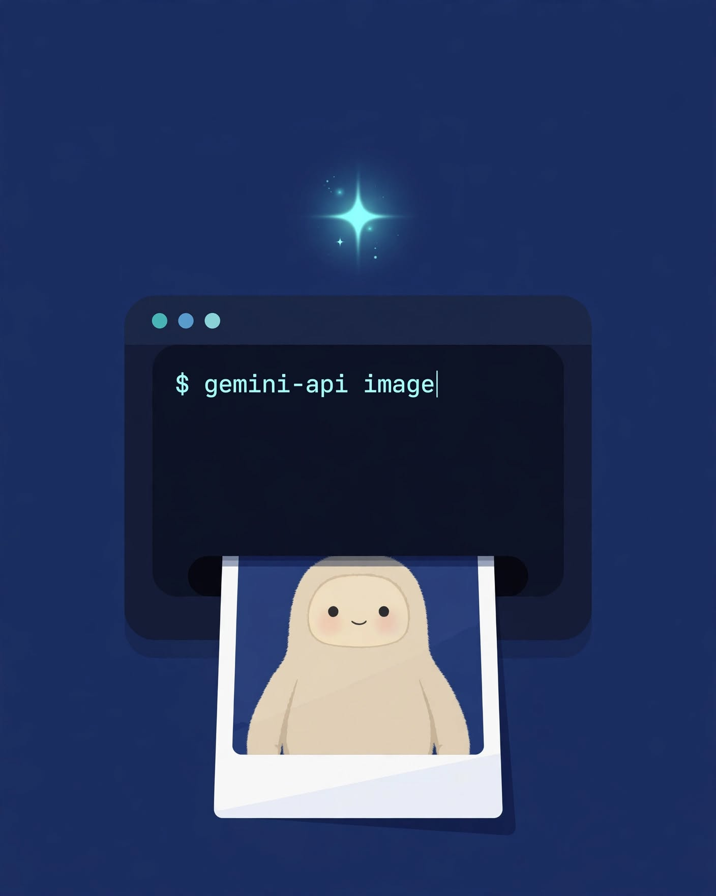

Facebook｜Gemini API CLI：讓既有 Agent 使用多模態 API，費用與 Skill 查核
一句話摘要
一人公司研究所分享 Gemini API CLI；官方文件支持其 API 與 dry-run 描述，但現行版本已有內嵌 Skill，不同模型與介面費率、額度不能一概而論。

原帖與實測的界線
作者 2026-11-26 表示曾下載倉庫、實際執行指令並測試無需金鑰或網路的 dry-run；列出生圖、短影片、語音、音樂、檔案分析及背景研究，提醒 Beta、金鑰和費用。這些是作者個案與文件描述，不是本次實測結果；本次沒有安裝、執行、登入或呼叫專案/API，也不保證端到端效果。原帖主張初版沒有現成 Skill，但不應套用到後續版本。
官方倉庫與安裝
2026-11-28 固定查核 google-gemini/gemini-api-cli commit 3dcbb6e542c222dad1e6f5b6e43cb390561d0cca。README 說明其為提供既有 agent 呼叫 Gemini API 的無狀態 CLI，支援文字、影像、影片、語音、音樂、檔案分析、轉錄及背景 managed agent。專案為 Beta，官方建議自動化釘版本；API 和預設模型可能變更。
根 LICENSE 是 Apache 2.0；README 另稱軟體為 Apache 2.0、其他材料為 CC BY 4.0，不等於所有依賴、模型或輸出素材皆同一授權。go.mod 包含 Cobra 等依賴；所謂單一執行檔不等於原始碼只有單一檔或建置零依賴。官方提供 macOS/Linux、Windows 安裝腳本、Go 安裝與 releases 預編譯檔；當前 main 的 go.mod 要求 Go 1.26.10，Go 自動工具鏈可能下載版本。先審查腳本及來源，不應盲目執行；以上僅文件核對。
特別注意：此固定 commit 的 README 明載內嵌的 gemini-api-cli agent skill，可透過 install-skill 安裝；不支援 skills 的宿主才以 AGENTS.md 等指示文字替代。因此原帖「沒有現成 Skill」不是此 commit 的現況；這不證明發文當時版本的情況。
Google Gemini CLI 是另一個專案 google-gemini/gemini-cli，定位為互動式編碼 agent；gemini-api-cli 則是讓既有 agent 或腳本使用 Gemini API 的命令工具。不可混淆其登入方式、服務資格與額度。
費用、免費額度與金鑰
2026-11-28 查核官方 API 價格，以下為當時 USD，實際以模型、區域、帳戶資格、服務、計費模式及最新價格表為準：
- 預設影像 gemini-nano-banana-2.1：API 免費層 Not available；標準 1K 圖輸出約 $0.0336，輸入等另計。
- 預設影片 gemini-omni-1.2-flash：API 免費層 Not available；標準 720p 約 $0.07／秒，15 秒約 $1.04，輸入另計。
- 預設音樂 lyria-3.5：API 免費層 Not available；完整歌曲 $0.08／首。
- 預設轉錄 gemini-3.5-transcribe 與預設 gemini-3.8-flash-tts：官方標準價格表列免費層免費，仍受額度及資格限制；付費層另按輸入／輸出計。不是所有文字模型、TTS 或其他介面皆免費。Deep Research 和 grounding 也要依實際模型、工具及價格表核對。
Google AI Studio 網站測試、Gemini 產品訂閱及 Gemini API 免費層是不同權益；不因某介面可試用就推論 CLI 的 API 免費。依官方速率限制，實際額度按模型及專案而異，升級付費層須設定 billing；查使用量與預算，避免意外支出。免費層與付費層的資料使用條款亦不同，敏感資料送出前先核閱。
正式 API 呼叫需適用的認證；README 提供 GEMINI_API_KEY 環境變數、系統鑰匙圈或設定檔等選項。避免將金鑰寫入程式庫、聊天、截圖或命令紀錄，採最小權限、預算監控與撤銷輪替。官方說 dry-run 可驗證輸入、顯示已遮蔽憑證的請求，且不連網或讀 OS keychain；這是文件聲明，本次未執行驗證，也不證明真實呼叫有權限或成功。
來源與查核
Facebook 原始分享：https://www.facebook.com/share/1FMKKqpZEe/?mibextid=wwXIfr
官方固定版本 README：https://github.com/google-gemini/gemini-api-cli/blob/3dcbb6e542c222dad1e6f5b6e43cb390561d0cca/README.md
官方 API 價格：https://ai.google.dev/gemini-api/docs/pricing
官方速率限制：https://ai.google.dev/gemini-api/docs/rate-limits
Google Gemini CLI 專案：https://github.com/google-gemini/gemini-cli